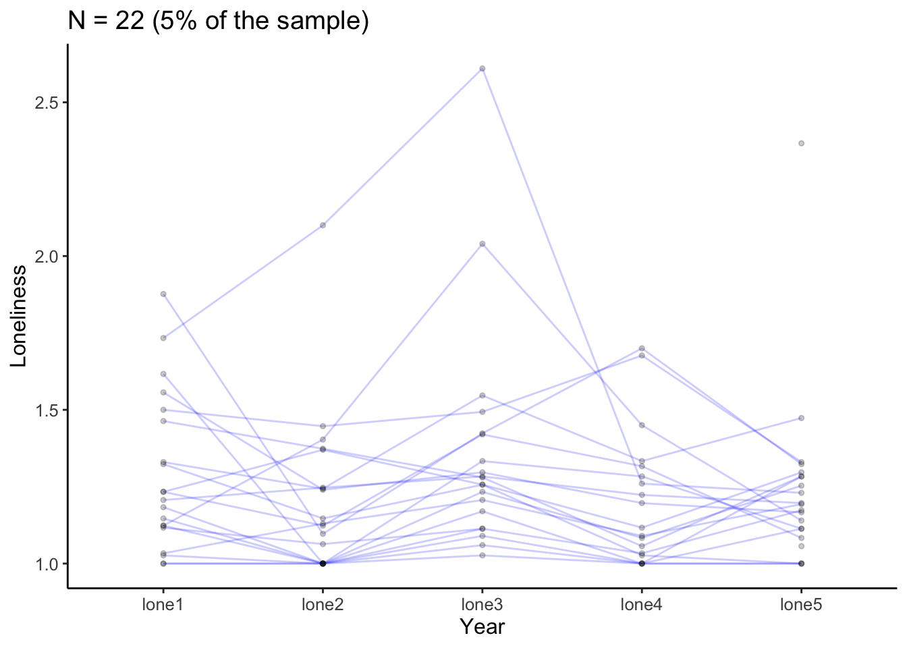

Latent Growth Curve Models (LGCM): Applications with R
Latent Growth Curve Models
Dynamic Models
Author
Frederick Anyan
Published
November 30, 2023
Different analysis techniques allow researchers to examine change in outcome variable(s) across time, including regression methods, mean comparisons and repeated measures ANOVA - although with some limitations. A common practice in developmental research is to assess growth trajectory to understand developmental change - how and when it happens, interindividual differences in how and when it happens, as well as why it happens. Structural Equation Modelling (SEM) is a family of related analysis techniques – correlations, regression analyses and factor analyses, using both observed and unobserved (latent) variables to offer a flexible framework for analyzing developmental change in a highly convenient and statistically rigorous framework for applied research in the social, behavioral, and educational sciences.
This workshop will cover basic and advanced longitudinal SEM models using R in a very easy and efficient implementation. To make the workshop more ‘theory- and practice-based’ than ‘equations-based’, the models that will be estimated in this workshop will be guided by the overarching objectives of longitudinal research (see Baltes & Nesselroade, 1979; McArdle, 2012).
References
Baltes, P. B., & Nesselroade, J. R. (1979). History and rationale of longitudinal research. In J. R. Nasselroade & P. B. Baltes (Eds.), Longitudinal research in the study of behaviour and development (pp. 1-39). New York: Academic Press.
McArdle, J. J. (2012). Foundational issues in the contemporary modeling of longitudinal trajectories. In B. Laursen, T. D. Little, & N. A. Card (Eds.), Handbook of developmental research methods (pp. 385-410). New York, NY: The Guilford Press.
Throughout this workshop, we will use only one function from the lavaan package. So, feel at ease even if it is your first time working in the R environment.
Following are models shown in the tab groups
Tab group 1
Model 1: The No growth or Intercept only model.
Model 2: The Linear growth model.
Model 3: The Quadratic growth model.
Tab group 2
Model 4_1: Bilinear/Spline/Piecewise/Multiphase model - M1.
Model 4_2: Bilinear/Spline/Piecewise/Multiphase model - M2.
Model 4_3: Bilinear/Spline/Piecewise/Multiphase model - M3.
Tab group 3
Model 6: The linear growth model with time invariant covariates.
Model 5: The linear growth model with time-varying covariates.
Model 7: The linear growth model with time-varying and time invariant covariates.
Model 8: The linear growth model with growth factors predicting a distal outcome.
Tab group 4
Model 9_1: Multiple-group linear growth model - Full Invariance (M1).
Model 9_2: Multiple-group linear growth model - Growth factor means freed(M2).
Model 9_3: Multiple-group linear growth model - Growth factor means and covariances freed(M3).
Model 9_4: Multiple-group linear growth model - Growth factor means, covariances and residual variances freed(M4).
Tab group 5
Model 10_1: Multivariate or Parallel growth model.
Model 10_2: Multivariate or Parallel growth model with autocorrelations.
Model 10_3: Multivariate or Parallel growth model with cross domain correlations.
Tab group 6
Model 11: Sequentially contingent growth model.
You can jump to the growth models by clicking on the options to your right
Practical preliminaries
Load packages
Code
suppressPackageStartupMessages({#library(haven) #To read dataset into R. library(psych)#For practical preliminaries: univariate and bivariate descriptive statslibrary(lcsm)#For plotting longitudinal trajectories from wide data setlibrary(lavaan)#For calling sem/cfa/growth functions. We will use the growth() function in the lavaan pacakage, which also has other functions. [See here](https://lavaan.ugent.be)library(ggplot2)})
Read data
Code
data<-read.csv("/Volumes/anyan-1/frederickanyan.github.io/quantpost_data/data.csv")#Create new data set with only your main outcome variableslonely<-data[, c("lone1", "lone2", "lone3", "lone4", "lone5")]#To plot longitudinal trajectories, create a new data set of only your outcome variables with id includedlonelytrajectory<-data[, c("personid", "lone1", "lone2", "lone3", "lone4", "lone5")]
#bivariate scatter plots below the diagonal, histograms on the diagonal, and the Pearson correlation above the diagonal.pairs.panels(lonely, lm =TRUE)#lm = TRUE to fit a regression line if needed
Explanatory test or how to interpret and use results from practical preliminaries can be found here
Code
plot_trajectories(data =lonelytrajectory, id_var ="personid", var_list =c("lone1", "lone2", "lone3", "lone4", "lone5"), xlab ="Year", ylab ="Loneliness", connect_missing =FALSE, #Want to plot only complete observations random_sample_frac =0.05, #You can select more or less than 5% of the data by adjusting this title_n =TRUE)
Warning: Removed 9 rows containing missing values or values outside the scale range
(`geom_line()`).
Warning: Removed 10 rows containing missing values or values outside the scale range
(`geom_point()`).

You can plot separate individual trajectories
Code
plot_trajectories(data =lonelytrajectory, id_var ="personid", var_list =c("lone1", "lone2", "lone3", "lone4", "lone5"), xlab ="Year", ylab ="Loneliness", connect_missing =FALSE, #Want to plot only complete observations random_sample_frac =0.025, #You can select more or less than 5% of the data by adjusting this title_n =TRUE)+facet_wrap(~personid)
Warning: Removed 5 rows containing missing values or values outside the scale range
(`geom_line()`).
Warning: Removed 5 rows containing missing values or values outside the scale range
(`geom_point()`).
Explanatory text or how to interpret and use results from things to do before fitting growth models to longitudinal data can be found here
No growth/Linear and Quadratic growth models
Basic growth models are described here, including the No growth model or the Intercept only model - which is a logical starting point for growth modelling. We want to reject the no growth modelling as it predicts no overall rate of change across time.
The next model is the Linear growth model which predicts a linear rate of change across time. The Quadratic growth model is a non-linear growth model that predicts an overall acceleration or deceleration in the rate of change when controlling for the linear change across time.
Although the Quadratic growth model can be a useful alternative when the Linear growth model fits poorly or there is some degree of non-linearity in the observed data, it can present much interpretation difficulty. The Bilinear/Spline/Piecewise/Multiphase model is a great alternative for fitting non-linear trajectories.
The Latent basis growth model allows the data to define the growth function - discussed in the workshop.
Warning in lav_object_post_check(object): lavaan WARNING: covariance matrix of latent variables
is not positive definite;
use lavInspect(fit, "cov.lv") to investigate.
lavaan 0.6.17 ended normally after 76 iterations
Estimator ML
Optimization method NLMINB
Number of model parameters 14
Used Total
Number of observations 321 442
Model Test User Model:
Test statistic 46.671
Degrees of freedom 6
P-value (Chi-square) 0.000
Model Test Baseline Model:
Test statistic 451.170
Degrees of freedom 10
P-value 0.000
User Model versus Baseline Model:
Comparative Fit Index (CFI) 0.908
Tucker-Lewis Index (TLI) 0.846
Loglikelihood and Information Criteria:
Loglikelihood user model (H0) -744.754
Loglikelihood unrestricted model (H1) -721.418
Akaike (AIC) 1517.507
Bayesian (BIC) 1570.308
Sample-size adjusted Bayesian (SABIC) 1525.902
Root Mean Square Error of Approximation:
RMSEA 0.145
90 Percent confidence interval - lower 0.108
90 Percent confidence interval - upper 0.185
P-value H_0: RMSEA <= 0.050 0.000
P-value H_0: RMSEA >= 0.080 0.998
Standardized Root Mean Square Residual:
SRMR 0.074
Parameter Estimates:
Standard errors Standard
Information Expected
Information saturated (h1) model Structured
Latent Variables:
Estimate Std.Err z-value P(>|z|)
i =~
lone1 1.000
lone2 1.000
lone3 1.000
lone4 1.000
lone5 1.000
s =~
lone1 0.000
lone2 1.000
lone3 3.000
lone4 4.000
lone5 6.000
q =~
lone1 0.000
lone2 1.000
lone3 9.000
lone4 16.000
lone5 36.000
Covariances:
Estimate Std.Err z-value P(>|z|)
i ~~
s -0.020 0.009 -2.179 0.029
q 0.000 0.001 0.265 0.791
s ~~
q -0.002 0.001 -1.792 0.073
Intercepts:
Estimate Std.Err z-value P(>|z|)
i 1.446 0.024 60.828 0.000
s 0.017 0.014 1.284 0.199
q -0.007 0.002 -3.384 0.001
Variances:
Estimate Std.Err z-value P(>|z|)
.lone1 0.037 0.014 2.584 0.010
.lone2 0.118 0.012 9.942 0.000
.lone3 0.144 0.014 10.115 0.000
.lone4 0.099 0.011 8.672 0.000
.lone5 0.099 0.027 3.684 0.000
i 0.148 0.019 7.974 0.000
s 0.018 0.007 2.697 0.007
q 0.000 0.000 0.959 0.337
Nested model comparisons
Models 1, 2 and 3 can be compared since Models 1 and 2 are nested in (i.e., reduced or constrained forms of) Model 3 (i.e., the full or free model). Model 1 is also a reduced form of Model 2. In this way, the best model to data correspondence can be determined through a Chi squared (\(\chi^2\)) difference test or a likelihood ratio test (LRT). If the LRT or the \(\chi^2\) difference is significant (\(p < .05\)), it means that the full model fits the data significantly better than the reduced or constrained model. Therefore, reject the reduced or constrained model in favor of the full model.
You should only compare models whose fit indices are acceptable. Therefore, in a real scenario, we would not compare Models 1 and 2 since theY do not reach acceptable model fit.
In the examples here, Model 3 is the best model representation of the data (at least, the best fitting model, although the RMSEA and TLI are not good enough). The non-linear growth function in Model 3 reproduces the trajectory observed when examining the mean values in the univariate descriptives. see here
Code
#The `anova` function in `lavaan` computes the LRT for nested models.compare_no_linear<-anova(fit_nogrowth, fit_linear)compare_no_linear
The results (\(\chi^2\)(3) = 111.19, \(p < .001\)) show significant difference in model fit between Model 1 (no growth mode, or reduced model) and Model 2 (linear growth, full model). Thus, Model 2, in which the linear growth factor is freely estimated (relative to Model 1) has improved data to model correspondence (or fits better) than Model 1. Therefore, Model 1 or the no growth model is rejected in favor of Model 2, the linear growth model.
All models can also be compared to determine the best fitting of the three models as follows
Code
#The `anova` function in `lavaan` computes the LRT for nested models.compare_no_linear_qua<-anova(fit_nogrowth, fit_linear, fit_quadratic)compare_no_linear_qua
Remember that this is just an example of how to compare nested models, and that you should only compare models whose fit indices are acceptable.
If the LRT or the \(\chi^2\) difference test returned a non-significant result (\(p > .05\)), then both Models 1 and 2 would be assumed to have no significant difference in model fit and thus, equally fit the data well. In this case, Model 1 (ie., the reduced model) which is a more parsimonious model compared to Model 2 should be selected as the best representation of model to data correspondence.
The Quadratic growth curve model is specified by adding a second-order power of time to the Linear growth curve model, which means that there would be a high correlation between the power terms. This can be resolved by centering the intercept growth factor in the middle of the observation, but becomes more difficult when moving to higher-order polynomials. For this reason, it is recommended to examine the data if a Piecewise growth curve model could be an alternative solution. The most common type is the Bilinear growth curve model which joins two linear growth factors. It also goes by the name Spline growth model and Multiphase growth model. They can accommodate different linear or nonlinear growth functions by segmenting the period of observation with a knot point often called transition points when there are theoretical reasons to separate the observations into discrete phases - hence their name Multiphase growth model. For example, they can be used to model developmental changes that occur during pre-school, primary school and high school with transition points at when a child begins primary school and also at when s/he begins high school.
Warning in lav_object_post_check(object): lavaan WARNING: covariance matrix of latent variables
is not positive definite;
use lavInspect(fit, "cov.lv") to investigate.
Warning in lav_object_post_check(object): lavaan WARNING: covariance matrix of latent variables
is not positive definite;
use lavInspect(fit, "cov.lv") to investigate.
Warning in lav_object_post_check(object): lavaan WARNING: covariance matrix of latent variables
is not positive definite;
use lavInspect(fit, "cov.lv") to investigate.
lavaan 0.6.17 ended normally after 68 iterations
Estimator ML
Optimization method NLMINB
Number of model parameters 14
Used Total
Number of observations 321 442
Model Test User Model:
Test statistic 40.781
Degrees of freedom 6
P-value (Chi-square) 0.000
Model Test Baseline Model:
Test statistic 451.170
Degrees of freedom 10
P-value 0.000
User Model versus Baseline Model:
Comparative Fit Index (CFI) 0.921
Tucker-Lewis Index (TLI) 0.869
Loglikelihood and Information Criteria:
Loglikelihood user model (H0) -741.809
Loglikelihood unrestricted model (H1) -721.418
Akaike (AIC) 1511.618
Bayesian (BIC) 1564.418
Sample-size adjusted Bayesian (SABIC) 1520.012
Root Mean Square Error of Approximation:
RMSEA 0.134
90 Percent confidence interval - lower 0.097
90 Percent confidence interval - upper 0.175
P-value H_0: RMSEA <= 0.050 0.000
P-value H_0: RMSEA >= 0.080 0.991
Standardized Root Mean Square Residual:
SRMR 0.074
Parameter Estimates:
Standard errors Standard
Information Expected
Information saturated (h1) model Structured
Latent Variables:
Estimate Std.Err z-value P(>|z|)
i =~
lone1 1.000
lone2 1.000
lone3 1.000
lone4 1.000
lone5 1.000
s1 =~
lone1 -3.000
lone2 -3.000
lone3 -3.000
lone4 -2.000
lone5 0.000
s2 =~
lone1 -3.000
lone2 -2.000
lone3 0.000
lone4 0.000
lone5 0.000
Covariances:
Estimate Std.Err z-value P(>|z|)
i ~~
s1 -0.012 0.008 -1.377 0.168
s2 0.011 0.003 3.342 0.001
s1 ~~
s2 0.000 0.002 0.083 0.934
Intercepts:
Estimate Std.Err z-value P(>|z|)
i 1.288 0.019 68.489 0.000
s1 -0.059 0.008 -7.002 0.000
s2 0.007 0.008 0.807 0.420
Variances:
Estimate Std.Err z-value P(>|z|)
.lone1 0.046 0.012 3.772 0.000
.lone2 0.114 0.011 10.134 0.000
.lone3 0.130 0.016 8.057 0.000
.lone4 0.106 0.011 9.719 0.000
.lone5 0.082 0.022 3.665 0.000
i 0.036 0.022 1.637 0.102
s1 0.002 0.004 0.571 0.568
s2 0.008 0.002 3.404 0.001
Growth models with time- varying and invariant predictors and distal outcomes
Dynamic predictors that change across time can be incorporated into the growth model to simultaneously estimate the overall rate of change and the change from the time-varying predictors. These dynamic, time-varying predictors account for within-person changes by altering the trajectory of growth in an individual.
Between-person differences in the within-person rate of change can be explained by the inclusion of time invariant predictors such as gender or experimental conditions.
Growth factors can also be hypothesized to predict distal outcomes that are measured after the growth process such as the rate of change in metacognitve therapy predicting recovery status in a 24-month follow up.
# 008_Linear growth model with growth factors predicting distal outcomes distal<-' i =~ 1*lone1 + 1*lone2 + 1*lone3 + 1*lone4 + 1*lone5 s =~ 0*lone1 + 1*lone2 + 3*lone3 + 4*lone4 + 6*lone5# Regress distal outcome on growth factorssubs5 ~ i + s#Estimate the intercept of distal outcome (subs5)subs5 ~ 1'fit_distal<-growth(distal, data =data)summary(fit_distal, fit.measures =TRUE)
lavaan 0.6.17 ended normally after 62 iterations
Estimator ML
Optimization method NLMINB
Number of model parameters 14
Used Total
Number of observations 290 442
Model Test User Model:
Test statistic 74.672
Degrees of freedom 13
P-value (Chi-square) 0.000
Model Test Baseline Model:
Test statistic 438.031
Degrees of freedom 15
P-value 0.000
User Model versus Baseline Model:
Comparative Fit Index (CFI) 0.854
Tucker-Lewis Index (TLI) 0.832
Loglikelihood and Information Criteria:
Loglikelihood user model (H0) -1240.424
Loglikelihood unrestricted model (H1) -1203.087
Akaike (AIC) 2508.847
Bayesian (BIC) 2560.226
Sample-size adjusted Bayesian (SABIC) 2515.829
Root Mean Square Error of Approximation:
RMSEA 0.128
90 Percent confidence interval - lower 0.101
90 Percent confidence interval - upper 0.157
P-value H_0: RMSEA <= 0.050 0.000
P-value H_0: RMSEA >= 0.080 0.998
Standardized Root Mean Square Residual:
SRMR 0.086
Parameter Estimates:
Standard errors Standard
Information Expected
Information saturated (h1) model Structured
Latent Variables:
Estimate Std.Err z-value P(>|z|)
i =~
lone1 1.000
lone2 1.000
lone3 1.000
lone4 1.000
lone5 1.000
s =~
lone1 0.000
lone2 1.000
lone3 3.000
lone4 4.000
lone5 6.000
Regressions:
Estimate Std.Err z-value P(>|z|)
subs5 ~
i 0.896 0.398 2.251 0.024
s 5.889 3.222 1.828 0.068
Covariances:
Estimate Std.Err z-value P(>|z|)
i ~~
s -0.015 0.003 -5.793 0.000
Intercepts:
Estimate Std.Err z-value P(>|z|)
.subs5 -0.006 0.539 -0.011 0.991
i 1.466 0.025 58.598 0.000
s -0.023 0.004 -5.114 0.000
Variances:
Estimate Std.Err z-value P(>|z|)
.lone1 0.055 0.011 5.231 0.000
.lone2 0.118 0.012 9.727 0.000
.lone3 0.171 0.015 11.052 0.000
.lone4 0.122 0.012 10.569 0.000
.lone5 0.052 0.011 4.929 0.000
.subs5 2.365 0.200 11.825 0.000
i 0.142 0.016 8.925 0.000
s 0.003 0.001 5.308 0.000
Multiple group growth models
The T 006_Linear growth model with time invariant covariate does not tell us anything about variances and covariances among growth factors, residual variability, and the structure of the within-person changes. A Multiple-group growth model approach offers greater flexibility in explaining between-person differences in the within-person rate of change than the Growth model with time invariant covariate. For example, the Wald test of differences in growth parameters can be tested within the multiple-group approach to explain whether, on average, the experimental group experience greater overall decline than the control group - thus providing insights into how and why individuals differ in their rate of change and by how much difference.
The multiple-group approach can inform about differences in all the growth function parameters - including the growth factors’ means, co/variances and residual variances. Thus, providing information about the differences in the overall rate of change, the extent of variability in the initial status and rate of change as well differences in the extent of fluctuations around individuals own trajectories across the groups.
Take for example, the feeling of loneliness among boys and girls. In addition to investigating significant differences in the predicted outcome at baseline or initial status (i.e., intercept) and rate of overall change (i.e., slope), we can also investigate differences in the amounts of variability at the between and within levels of the growth model and may find that boys show greater variability in the intercept and slope indicating that boys’ trajectories are more different from one another than girls’ trajectories. The structure of within-person changes may also vary such that boys may show slower decline than girls in the feeling of loneliness. We can thus conclude, boys and girls differ in their baseline, and the average growth trajectories of loneliness, the extent of between-person differences in those trajectories and the extent of variability around their individual trajectories.
The multigroup approach can tell us why and how groups of people significantly differ and by how much difference in their trajectories or development over time.
lavaan 0.6.17 ended normally after 49 iterations
Estimator ML
Optimization method NLMINB
Number of model parameters 20
Number of equality constraints 8
Number of observations per group: Used Total
0 178 222
1 142 193
Model Test User Model:
Test statistic 178.403
Degrees of freedom 28
P-value (Chi-square) 0.000
Test statistic for each group:
0 87.439
1 90.964
Model Test Baseline Model:
Test statistic 463.335
Degrees of freedom 20
P-value 0.000
User Model versus Baseline Model:
Comparative Fit Index (CFI) 0.661
Tucker-Lewis Index (TLI) 0.758
Loglikelihood and Information Criteria:
Loglikelihood user model (H0) -762.185
Loglikelihood unrestricted model (H1) -672.984
Akaike (AIC) 1548.371
Bayesian (BIC) 1593.591
Sample-size adjusted Bayesian (SABIC) 1555.529
Root Mean Square Error of Approximation:
RMSEA 0.183
90 Percent confidence interval - lower 0.158
90 Percent confidence interval - upper 0.209
P-value H_0: RMSEA <= 0.050 0.000
P-value H_0: RMSEA >= 0.080 1.000
Standardized Root Mean Square Residual:
SRMR 0.172
Parameter Estimates:
Standard errors Standard
Information Expected
Information saturated (h1) model Structured
Group 1 [0]:
Latent Variables:
Estimate Std.Err z-value P(>|z|)
i =~
lone1 1.000
lone2 1.000
lone3 1.000
lone4 1.000
lone5 1.000
s =~
lone1 0.000
lone2 1.000
lone3 3.000
lone4 4.000
lone5 6.000
Covariances:
Estimate Std.Err z-value P(>|z|)
i ~~
s (covm) -0.014 0.004 -3.668 0.000
Intercepts:
Estimate Std.Err z-value P(>|z|)
i (intm) 1.550 0.036 43.187 0.000
s (slpm) -0.031 0.006 -4.949 0.000
Variances:
Estimate Std.Err z-value P(>|z|)
i (vinm) 0.163 0.025 6.632 0.000
s (vslm) 0.001 0.001 1.842 0.065
.lone1 (rsm) 0.121 0.007 16.340 0.000
.lone2 (rsm) 0.121 0.007 16.340 0.000
.lone3 (rsm) 0.121 0.007 16.340 0.000
.lone4 (rsm) 0.121 0.007 16.340 0.000
.lone5 (rsm) 0.121 0.007 16.340 0.000
Group 2 [1]:
Latent Variables:
Estimate Std.Err z-value P(>|z|)
i =~
lone1 1.000
lone2 1.000
lone3 1.000
lone4 1.000
lone5 1.000
s =~
lone1 0.000
lone2 1.000
lone3 3.000
lone4 4.000
lone5 6.000
Covariances:
Estimate Std.Err z-value P(>|z|)
i ~~
s (covf) -0.006 0.003 -2.146 0.032
Intercepts:
Estimate Std.Err z-value P(>|z|)
i (intf) 1.401 0.031 44.901 0.000
s (slpf) -0.020 0.006 -3.321 0.001
Variances:
Estimate Std.Err z-value P(>|z|)
i (vinf) 0.087 0.017 5.217 0.000
s (vslf) 0.001 0.001 1.565 0.118
.lone1 (rsf) 0.093 0.006 14.595 0.000
.lone2 (rsf) 0.093 0.006 14.595 0.000
.lone3 (rsf) 0.093 0.006 14.595 0.000
.lone4 (rsf) 0.093 0.006 14.595 0.000
.lone5 (rsf) 0.093 0.006 14.595 0.000
Nested model comparisons in the Multigroup LGCM
Models 9_1, 9_2, 9_3 and 9_4 can be compared since the first three are all nested in Model 9_4 (i.e., they are reduced or constrained forms of the full model in Model 9_4), and the first two are nested in Model 9_3 with Model 9_1 also nested in Model 9_2. The same approach for selecting the best-fitting model as in the comparisons of Models 1, 2, and 3 is employed here too.
If the LRT or the \(\chi^2\) difference is significant (\(p < .05\)), it means that the full model fits the data significant better than the reduced or constrained model.
The constraints in each of the models have implications for how the results are interpreted in the multigroup approach,. Following are the sequence of testing in the multigroup approach.
M1: Constrain all parameters (growth factor means, growth factor variances and covariances, and residual variances) to be identical across groups
M2: Freely estimate growth factor means across groups, while keeping constraints on the growth factor variances and covariance, and residual variances
M3: Freely estimate growth factor means, growth factor variances and covariances, while keeping the constraints on the residual variances
M4: Freely estimate growth factor means, growth factor variances and covariances, and residual variances across the groups
In the first model (Model 9_1 or M1), it is assumed that both groups have the same growth function and shape, along with the same magnitude of variation in the growth factors and within-person deviations from the growth function.
That is to say, both groups have equal initial (starting) level and rate of change in loneliness as well as equal inter-individual differences in the initial level and rate of change as well as equal within-person variability around individual trajectories (or in the time-specific deviations from the rate of change).
In the second model (Model 9_2 or M2), the growth factors means are freely estimated while keeping all the other constraints or assumptions. Thus, the second model suggests that the groups have unequal initial level and rate of change.
In the third mode (Model 9_3 or M3), inter-individual or between-person differences in the initial level, the rate of change, and the correlation between the initial level and rate of change are now also freely estimated - indicating that both groups have different initial level, rate of change and the correlation between them.
Finally, Model 9_4 or M4, indicates that in addition to both groups having different initial level, rate of change and the correlation between them, within-person variability around individual trajectories are also different between both groups.
Here the comparisons tests the following
M1 vs. M2: Tests whether the both groups differ in their initial level and average trajectory or rate of change
M2 vs. M3: Tests the extent of inter-individual or between-person differences in the initial level and rate of change in both groups
M3 vs. M4: Tests the extent of within-person variability around individual trajectories
If all models fit equally well (i.e., no significant results from the LRT or \(\chi^2\) difference is not significant (\(p > .05\))) then choose the model with the smallest number of parameters, M1 – most parsimonious model as it is the most constrained/reduced model.
Code
#The `anova` function in `lavaan` computes the LRT for nested models.compare_groups<-anova(fit_multigroupM1, fit_multigroupM2, fit_multigroupM3, fit_multigroupM4)compare_groups
The LRT or the \(\chi^2\) difference test returned significant results for all three tests, suggesting that the full model (Model 9_4 or M4) is best fitting model in this case.
Substantively, this means that both groups (males and females) differ in their average initial level and growth trajectories of loneliness, the extent of between-person differences in those trajectories and the extent of variability around their individual trajectories.
Using Model 9_4 or M4, we can test whether the differences are significant as follows
Test of parameter constraints
First we test whether the intercept growth factors in both groups are significantly different
Modelling co-development and Multivariate growth models
Modelling the co-development among different attributes such as the comorbidity of anxiety and depression is becoming more common. Multivariate growth models also called Parallel growth models can accommodate different growth functions among two or more attributes.
Care must be taken and theoretical considerations must be prioritized when choosing between Multivariate growth curve models and the Growth curve models with time-varying covariates.
The two are related but answer different research questions.
# 010_1_Parallel growth curve models - anxiety and depression symptomsparallel<-' ia =~ 1*anx1 + 1*anx2 + 1*anx3 + 1*anx4 + 1*anx5 sa =~ 0*anx1 + 1*anx2 + 3*anx3 + 4*anx4 + 6*anx5 id =~ 1*dep1 + 1*dep2 + 1*dep3 + 1*dep4 + 1*dep5 sd =~ 0*dep1 + 1*dep2 + 3*dep3 + 4*dep4 + 6*dep5#Growth factor corelations ia ~~ id + sasd ~~ id + saia ~~ 0*sd id ~~ 0*sa'fit_parallel<-growth(parallel, data =data)
Warning in lav_object_post_check(object): lavaan WARNING: covariance matrix of latent variables
is not positive definite;
use lavInspect(fit, "cov.lv") to investigate.
lavaan 0.6.17 ended normally after 88 iterations
Estimator ML
Optimization method NLMINB
Number of model parameters 22
Used Total
Number of observations 321 442
Model Test User Model:
Test statistic 820.887
Degrees of freedom 43
P-value (Chi-square) 0.000
Model Test Baseline Model:
Test statistic 1912.994
Degrees of freedom 45
P-value 0.000
User Model versus Baseline Model:
Comparative Fit Index (CFI) 0.584
Tucker-Lewis Index (TLI) 0.564
Loglikelihood and Information Criteria:
Loglikelihood user model (H0) -1711.078
Loglikelihood unrestricted model (H1) -1300.634
Akaike (AIC) 3466.156
Bayesian (BIC) 3549.128
Sample-size adjusted Bayesian (SABIC) 3479.347
Root Mean Square Error of Approximation:
RMSEA 0.237
90 Percent confidence interval - lower 0.223
90 Percent confidence interval - upper 0.252
P-value H_0: RMSEA <= 0.050 0.000
P-value H_0: RMSEA >= 0.080 1.000
Standardized Root Mean Square Residual:
SRMR 0.357
Parameter Estimates:
Standard errors Standard
Information Expected
Information saturated (h1) model Structured
Latent Variables:
Estimate Std.Err z-value P(>|z|)
ia =~
anx1 1.000
anx2 1.000
anx3 1.000
anx4 1.000
anx5 1.000
sa =~
anx1 0.000
anx2 1.000
anx3 3.000
anx4 4.000
anx5 6.000
id =~
dep1 1.000
dep2 1.000
dep3 1.000
dep4 1.000
dep5 1.000
sd =~
dep1 0.000
dep2 1.000
dep3 3.000
dep4 4.000
dep5 6.000
Covariances:
Estimate Std.Err z-value P(>|z|)
ia ~~
id 0.125 0.012 10.436 0.000
sa 0.000 0.002 0.109 0.913
id ~~
sd 0.005 0.002 2.216 0.027
sa ~~
sd 0.004 0.000 9.146 0.000
ia ~~
sd 0.000
sa ~~
id 0.000
Intercepts:
Estimate Std.Err z-value P(>|z|)
ia 1.397 0.022 64.889 0.000
sa -0.032 0.004 -7.842 0.000
id 1.545 0.027 56.861 0.000
sd -0.014 0.005 -2.825 0.005
Variances:
Estimate Std.Err z-value P(>|z|)
.anx1 0.083 0.010 8.647 0.000
.anx2 0.122 0.011 11.095 0.000
.anx3 0.148 0.012 11.878 0.000
.anx4 0.103 0.009 11.541 0.000
.anx5 0.062 0.008 7.615 0.000
.dep1 0.103 0.012 8.309 0.000
.dep2 0.149 0.014 10.787 0.000
.dep3 0.241 0.020 11.889 0.000
.dep4 0.181 0.016 11.601 0.000
.dep5 0.156 0.017 9.292 0.000
ia 0.097 0.012 8.393 0.000
sa 0.002 0.000 3.997 0.000
id 0.171 0.019 8.956 0.000
sd 0.002 0.001 2.954 0.003
Code
# 010_2_Parallel growth curve models - anxiety and depression symptoms with autocorrelationsparallelautocor<-' ia =~ 1*anx1 + 1*anx2 + 1*anx3 + 1*anx4 + 1*anx5 sa =~ 0*anx1 + 1*anx2 + 3*anx3 + 4*anx4 + 6*anx5 id =~ 1*dep1 + 1*dep2 + 1*dep3 + 1*dep4 + 1*dep5 sd =~ 0*dep1 + 1*dep2 + 3*dep3 + 4*dep4 + 6*dep5#Growth factor corelations ia ~~ id + sasd ~~ id + saia ~~ 0*sd id ~~ 0*sa#Autocorrelations anx1 ~~ anx2anx2 ~~ anx3anx3 ~~ anx4anx4 ~~ anx5dep1 ~~ dep2dep2 ~~ dep3dep3 ~~ dep4dep4 ~~ dep5'fit_parallelautocor<-growth(parallelautocor, data =data)
Warning in lav_object_post_check(object): lavaan WARNING: covariance matrix of latent variables
is not positive definite;
use lavInspect(fit, "cov.lv") to investigate.
lavaan 0.6.17 ended normally after 97 iterations
Estimator ML
Optimization method NLMINB
Number of model parameters 30
Used Total
Number of observations 321 442
Model Test User Model:
Test statistic 797.045
Degrees of freedom 35
P-value (Chi-square) 0.000
Model Test Baseline Model:
Test statistic 1912.994
Degrees of freedom 45
P-value 0.000
User Model versus Baseline Model:
Comparative Fit Index (CFI) 0.592
Tucker-Lewis Index (TLI) 0.475
Loglikelihood and Information Criteria:
Loglikelihood user model (H0) -1699.157
Loglikelihood unrestricted model (H1) -1300.634
Akaike (AIC) 3458.314
Bayesian (BIC) 3571.457
Sample-size adjusted Bayesian (SABIC) 3476.302
Root Mean Square Error of Approximation:
RMSEA 0.260
90 Percent confidence interval - lower 0.245
90 Percent confidence interval - upper 0.276
P-value H_0: RMSEA <= 0.050 0.000
P-value H_0: RMSEA >= 0.080 1.000
Standardized Root Mean Square Residual:
SRMR 0.337
Parameter Estimates:
Standard errors Standard
Information Expected
Information saturated (h1) model Structured
Latent Variables:
Estimate Std.Err z-value P(>|z|)
ia =~
anx1 1.000
anx2 1.000
anx3 1.000
anx4 1.000
anx5 1.000
sa =~
anx1 0.000
anx2 1.000
anx3 3.000
anx4 4.000
anx5 6.000
id =~
dep1 1.000
dep2 1.000
dep3 1.000
dep4 1.000
dep5 1.000
sd =~
dep1 0.000
dep2 1.000
dep3 3.000
dep4 4.000
dep5 6.000
Covariances:
Estimate Std.Err z-value P(>|z|)
ia ~~
id 0.120 0.012 10.344 0.000
sa 0.004 0.002 1.529 0.126
id ~~
sd 0.007 0.004 1.748 0.080
sa ~~
sd 0.004 0.000 9.109 0.000
ia ~~
sd 0.000
sa ~~
id 0.000
.anx1 ~~
.anx2 0.021 0.011 1.880 0.060
.anx2 ~~
.anx3 0.032 0.009 3.402 0.001
.anx3 ~~
.anx4 -0.000 0.008 -0.058 0.954
.anx4 ~~
.anx5 -0.012 0.009 -1.262 0.207
.dep1 ~~
.dep2 0.022 0.018 1.239 0.215
.dep2 ~~
.dep3 0.027 0.013 2.045 0.041
.dep3 ~~
.dep4 0.017 0.015 1.183 0.237
.dep4 ~~
.dep5 -0.039 0.016 -2.440 0.015
Intercepts:
Estimate Std.Err z-value P(>|z|)
ia 1.394 0.021 65.511 0.000
sa -0.032 0.004 -8.005 0.000
id 1.543 0.027 57.239 0.000
sd -0.017 0.005 -3.386 0.001
Variances:
Estimate Std.Err z-value P(>|z|)
.anx1 0.102 0.015 6.870 0.000
.anx2 0.145 0.014 10.330 0.000
.anx3 0.162 0.014 11.832 0.000
.anx4 0.091 0.010 9.176 0.000
.anx5 0.049 0.013 3.626 0.000
.dep1 0.116 0.023 5.122 0.000
.dep2 0.173 0.020 8.867 0.000
.dep3 0.252 0.022 11.625 0.000
.dep4 0.161 0.018 9.108 0.000
.dep5 0.119 0.025 4.742 0.000
ia 0.073 0.015 4.804 0.000
sa 0.002 0.001 2.197 0.028
id 0.147 0.026 5.720 0.000
sd 0.003 0.001 2.232 0.026
Code
# 010_3_Parallel growth curve models - anxiety and depression symptoms with cross-domain correlations parallelcross<-' ia =~ 1*anx1 + 1*anx2 + 1*anx3 + 1*anx4 + 1*anx5 sa =~ 0*anx1 + 1*anx2 + 3*anx3 + 4*anx4 + 6*anx5 id =~ 1*dep1 + 1*dep2 + 1*dep3 + 1*dep4 + 1*dep5 sd =~ 0*dep1 + 1*dep2 + 3*dep3 + 4*dep4 + 6*dep5#Growth factor corelations ia ~~ id + sasd ~~ id + saia ~~ 0*sd id ~~ 0*sa#Cross domain correlationsanx1 ~~ dep1anx2 ~~ dep2anx3 ~~ dep3anx4 ~~ dep4anx5 ~~ dep5'fit_parallelcross<-growth(parallelcross, data =data)summary(fit_parallelcross, fit.measures =TRUE)
lavaan 0.6.17 ended normally after 103 iterations
Estimator ML
Optimization method NLMINB
Number of model parameters 27
Used Total
Number of observations 321 442
Model Test User Model:
Test statistic 161.219
Degrees of freedom 38
P-value (Chi-square) 0.000
Model Test Baseline Model:
Test statistic 1912.994
Degrees of freedom 45
P-value 0.000
User Model versus Baseline Model:
Comparative Fit Index (CFI) 0.934
Tucker-Lewis Index (TLI) 0.922
Loglikelihood and Information Criteria:
Loglikelihood user model (H0) -1381.244
Loglikelihood unrestricted model (H1) -1300.634
Akaike (AIC) 2816.487
Bayesian (BIC) 2918.316
Sample-size adjusted Bayesian (SABIC) 2832.676
Root Mean Square Error of Approximation:
RMSEA 0.101
90 Percent confidence interval - lower 0.085
90 Percent confidence interval - upper 0.117
P-value H_0: RMSEA <= 0.050 0.000
P-value H_0: RMSEA >= 0.080 0.983
Standardized Root Mean Square Residual:
SRMR 0.122
Parameter Estimates:
Standard errors Standard
Information Expected
Information saturated (h1) model Structured
Latent Variables:
Estimate Std.Err z-value P(>|z|)
ia =~
anx1 1.000
anx2 1.000
anx3 1.000
anx4 1.000
anx5 1.000
sa =~
anx1 0.000
anx2 1.000
anx3 3.000
anx4 4.000
anx5 6.000
id =~
dep1 1.000
dep2 1.000
dep3 1.000
dep4 1.000
dep5 1.000
sd =~
dep1 0.000
dep2 1.000
dep3 3.000
dep4 4.000
dep5 6.000
Covariances:
Estimate Std.Err z-value P(>|z|)
ia ~~
id 0.075 0.009 8.272 0.000
sa -0.004 0.001 -2.790 0.005
id ~~
sd -0.002 0.002 -1.204 0.229
sa ~~
sd 0.000 0.000 1.208 0.227
ia ~~
sd 0.000
sa ~~
id 0.000
.anx1 ~~
.dep1 0.082 0.011 7.655 0.000
.anx2 ~~
.dep2 0.105 0.012 8.565 0.000
.anx3 ~~
.dep3 0.130 0.015 8.939 0.000
.anx4 ~~
.dep4 0.103 0.011 8.982 0.000
.anx5 ~~
.dep5 0.056 0.011 4.900 0.000
Intercepts:
Estimate Std.Err z-value P(>|z|)
ia 1.394 0.021 66.266 0.000
sa -0.031 0.004 -7.868 0.000
id 1.548 0.026 59.272 0.000
sd -0.013 0.005 -2.773 0.006
Variances:
Estimate Std.Err z-value P(>|z|)
.anx1 0.109 0.012 9.157 0.000
.anx2 0.137 0.013 10.704 0.000
.anx3 0.154 0.013 11.374 0.000
.anx4 0.106 0.010 10.746 0.000
.anx5 0.056 0.010 5.820 0.000
.dep1 0.134 0.015 8.954 0.000
.dep2 0.171 0.016 10.473 0.000
.dep3 0.241 0.021 11.262 0.000
.dep4 0.187 0.017 10.745 0.000
.dep5 0.158 0.020 7.910 0.000
ia 0.080 0.010 8.242 0.000
sa 0.001 0.000 3.065 0.002
id 0.138 0.016 8.787 0.000
sd 0.001 0.001 1.222 0.222
Sequentially contingent growth models
Growth in one attribute can predict the growth that occur in another attribute later in the developmental process. The rate of change in language development during pre-school may predict the rate of change in language skills during primary school. Sequentially contingent growth models offer flexibility in modelling such relations in the developmental process that occur in different stages, but might be contingent on each other.